音频控件
音频控件用于播放音频，仅带喇叭的型号（例如X3、X5系列）支持
音频控件-使用详解
音频控件位于特殊控件栏
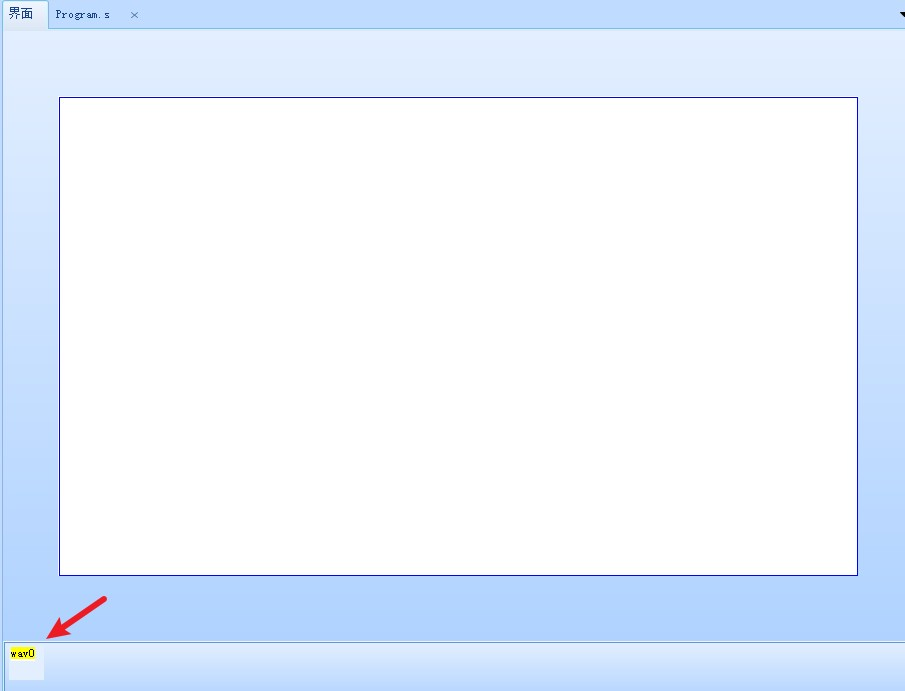
使用音频控件前，需要先用音视频转换工具转换音频资源（即使原本就是wav格式，如果导不进去，也请再转换一遍）
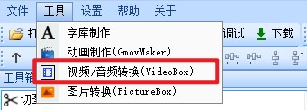
点击这里切换到音频转换
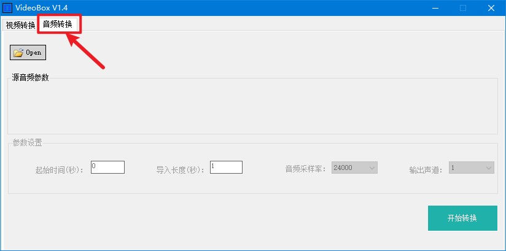
转换好的音频文件，从左下角的音频资源窗口导入
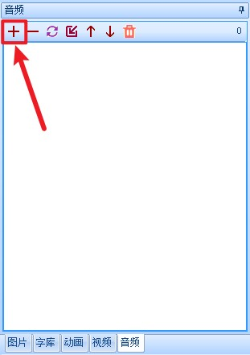
导入成功后，我们需要关注的是音频文件的ID号
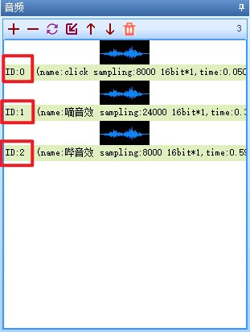
音频控件的vid属性填写的是对应音频控件的id号
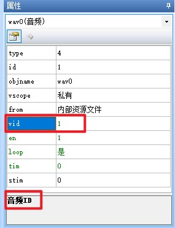
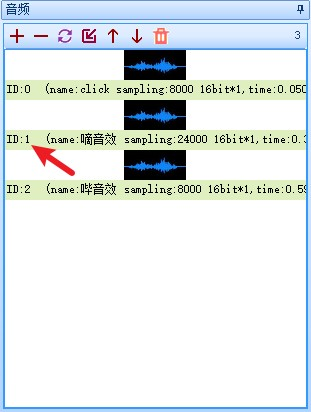
音频控件可以配置from属性，来设置从flash内部或者从SD卡内读取音频资源进行播放，当配置为外部文件时，此时将会从SD卡中调用文件，vid属性将变成path属性
请提前将转换好的资源文件复制到SD卡或者虚拟SD卡文件夹，并且填写正确的path属性。
注意
当需要在上位机的模拟器里调试时，请将资源复制到虚拟SD卡文件夹中，需要在串口屏实物上调试时，请将资源复制到SD卡里，并将SD卡插到串口屏上
虚拟SD卡文件夹打开方式
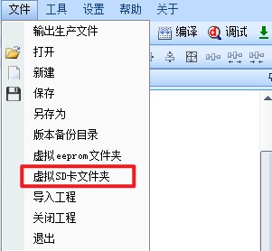
SD卡不能超过32GB（例如：512M、1GB、2GB、4GB、8GB、16GB、32GB都是可用的），请格式化为FAT32格式
例如放在SD卡根目录的1.wav文件，对应的路径是
sd0/1.wav
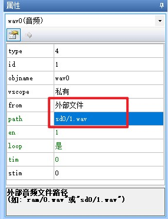
放在SD卡music目录下的mylove.wav文件，对应的路径是
sd0/music/mylove.wav
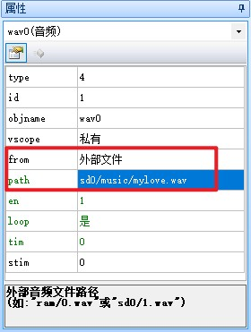
打开或关闭音频
//串口屏控件事件代码（通常写在串口屏控件的按下或弹起事件中）
wav0.en=1 //开始播放音频
wav0.en=0 //停止播放音频
//单片机发送指令音频控制指令
int sound_sta = 1; //播放状态
char tjcstr[100];
sprintf(tjcstr, "main.wav0.en=%d\xff\xff\xff",sound_sta);
printf(tjcstr); //单片机需要配置printf重定向到串口
//arduino发送指令音频控制指令
int sound_sta = 1; //播放状态
char tjcstr[100];
sprintf(tjcstr, "main.wav0.en=%d\xff\xff\xff",sound_sta);
Serial.print(tjcstr);
设置音频是否循环播放
//串口屏控件事件代码（通常写在串口屏控件的按下或弹起事件中）
wav0.loop=1 //循环播放音频
wav0.loop=0 //不循环播放音频
//单片机发送指令音频控制指令
int sound_loop = 1; //循环状态
char tjcstr[100];
sprintf(tjcstr, "main.wav0.loop=%d\xff\xff\xff",sound_loop);
printf(tjcstr); //单片机需要配置printf重定向到串口
//arduino发送指令音频控制指令
int sound_loop = 1; //循环状态
char tjcstr[100];
sprintf(tjcstr, "main.wav0.loop=%d\xff\xff\xff",sound_loop);
Serial.print(tjcstr);
音频控件和play指令区别
①音频控件播放音频只能在当前页面播放，不可跨页面播放。play指令可以在各个页面使用。如果设置各个页面按键音那么使用play指令。
②音频控件可以选择播放外部资源文件(sd卡文件)，play指令只能播放内部资源文件。
③音频控件可以获取播放音频的总时间以及当前时间，play指令无法获取。
④音频控件会占用大量内存，使用多个音频控件会导致内存溢出。play指令不会出现类似问题。
⑤音频控件在事件编译窗口会有播放完成事件，play指令没有。
如何使用外部音频播放
1.控件属性from设置为1（外部文件）；2.path设置为路径（例：sd0/1.wav， 注：运行赋值需要加双引号）。
音频控件-常见问题
wav0.vid 初始值无效:音频ID无效
这是因为没有配置vid属性导致的，导入音频文件并配置vid属性即可
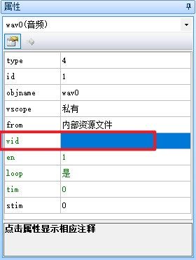
屏幕使用外部音频播放无声音
1.屏幕是否识别到sd卡里的文件（可以用文件浏览器控件看是否有文件显示出来）；2.sd卡音频文件名是否和属性path设置的文件名是否一致（即path设置为sd0/1.wav，那么SD卡根目录音频文件名要为1.wav，否则无法识别到）；3.屏幕电路板是否有外接喇叭（sd卡旁边j5接口是否接有喇叭）。4.检测volume指令是否设置为0（默认为100）
音频控件-样例工程下载
演示工程下载链接：
音频控件-相关链接
哪些控件属性可以运行中修改，哪些不能运行中修改，绿色属性和黑色属性有什么区别？
音频控件-属性详解
提示
绿色属性可以通过上位机或者串口屏指令进行修改，黑色属性只能在上位机中修改或者不可修改，可通过上位机进行修改指“选中控件后通过属性栏修改控件的属性”
type属性 -控件类型，固定值，不同类型的控件type值不同，相同类型的控件type值相同，可读，不可通过上位机修改，不可通过指令修改。参考： 控件属性-控件id对照表
id属性 -控件ID，可通过上位机左上角的上下箭头置顶或置底，可读，可通过上位机修改左上角的箭头置顶或置地间接修改，不可通过指令修改。参考： 如何更改控件的前后图层关系
objname属性 -控件名称。不可读，可通过上位机进行修改，不可通过指令更改。
vscope属性 -内存占用(私有占用只能在当前页面被访问，全局占用可以在所有页面被访问)，当设置为私有时，跳转页面后，该控件占用的内存会被释放，重新返回该页面后该控件会恢复到最初的设置。可读，可通过上位机进行修改，不可通过指令更改。参考：跨页面赋值，全局变量操作
from属性 -播放源，内部资源文件或外部文件，可通过上位机进行修改，不可通过指令更改
vid属性 -音频ID。播放源为内部资源文件时显示。可通过上位机进行修改，可通过指令更改
path属性 -外部音频文件路径(如:”ram/0.wav”或”sd0/1.wav”)。播放源为外部文件时显示。可通过上位机进行修改，可通过指令更改。
en属性 -播放状态(0-停止;1-播放;2-暂停)，可通过上位机进行修改，可通过指令更改
loop属性 -循环播放:0-否;1-是，可通过上位机进行修改，可通过指令更改
tim属性 -当前播放时间(ms)，可通过上位机进行修改，可通过指令更改
stim属性 -总时间(由音频文件决定，不可更改，运行中可获取)